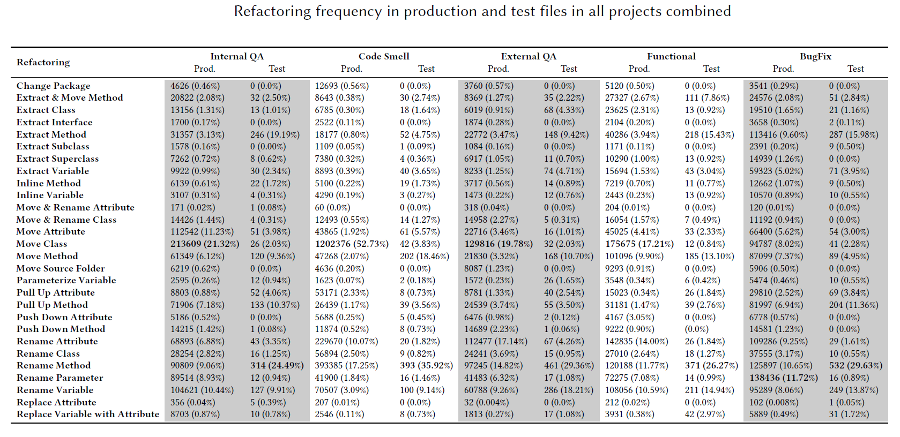

In the below table, we show the volume of operations for each refactoring operation applied to the refactored test and production files grouped by the classification category associated with the file. Values in bold indicate the most common applied refactoring operation – Move Class and Rename Parameter for production files, and Rename Method for test files.
Concerning production file-related refactoring motivations, the top most refactoring operations performed across all refactoring motivations is Move Class refactoring, except for BugFix in which Rename Attribute is the highest performed refactoring. In the case of internal quality attribute-related motivations, developers performed Move Class refactoring to move the relevant classes to the right package if there are many dependencies for the class between two packages. This could eliminate undesired dependencies between modules. Another possibility for the reason to perform such refactoring is to introduce a sub-package and move a group of related classes to a new subpackage. With respect to code smell resolution motivation, developers eliminate a redundant sub-package and nesting level in the package structure when performing Move Class refactoring operations. With regards to external quality attribute-related motivation, developers can target improving the understandability of the code by repackaging and moving the classes between these packages. Hence, the structure of the code becomes more understandable. Developers could also maintain code compatibility by moving a class back to its original package to maintain backward compatibility. For feature addition or modification, Move Class refactoring is performed when adding new or modifying the implemented features. This could be done by moving the class to appropriate containers or moving a class to a package that is more functionally or conceptually relevant. Lastly, for bug fixing-related motivations, developers mainly improve parameter and method names; they rename a parameter or method to better represent its purpose and to enforce naming consistency and to conform to the project’s naming conventions. Developers need to change the semantics of the code to improve the readability of the code. For test files-related refactoring motivations, the most frequently applied refactoring is Rename Method. This can be explained by the fact that test methods are the fundamental elements in a test suite. Test methods are utilized to test the production source code; hence, the high occurrence of method based refactorings in unit test files. The observed difference in the distribution of refactorings in production/test files between our study and the related work is also due to the size (number of projects) effect of the two groups under comparison.
